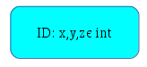
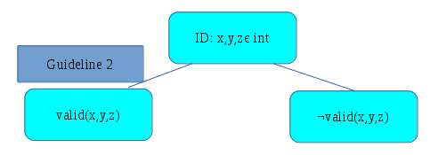
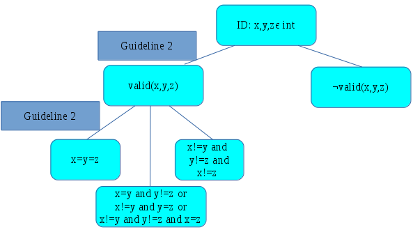
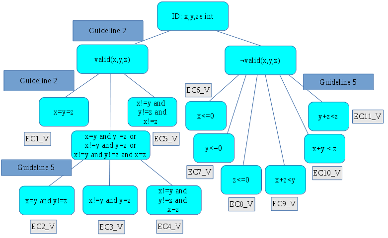

2. Input Partitioning#
2.1. Learning outcomes of this chapter#
At the end of this chapter, you should be able to:
Describe the purpose of equivalence partitioning.
Define valid input domain, invalid input domain, and non-testable input domain Apply testing guidelines to define new equivalence classes for a program based on its functional specification.
Using the test template tree approach to generate equivalence classes for a program based on its functional specification
Given a set of equivalence classes, generate tests from those equivalence classes
2.2. Chapter Introduction#
Recall from Section Input Domains, that each program has an input domain — the set of values that can be used as input to the program. Test input selection is all about selecting the values in this domain that have the highest likelihood of producing failures.
Using input partitioning, programs are considered as the composition of an input classifier, that classifies the input domain into one of a number of different classes where each input class computes one function of the overall program.
Figure 2.1: The Domain Model: The program acts as a classifier (or filter) that takes each input and determines which of the many program functions to apply to the input.
The canonical representation of a program is the set \(\{ (D_1; F_1), (D_2; F_2), \ldots \}\), where \(D_i\) is the \(i^{th}\) domain and \(F_{i}\) is the corresponding function computed by the program. There is a one-to-one correspondence between the input domains and the functions computed by a program. Each of the functions computed by a program occurs along a program path, that is, a path in the program that executes a sequence of statements for computing the function. In domain testing, an input domain is the subset of all inputs that will trigger a specific program function to be computed along a specific program path.
As an example, consider the program in Figure 2.2, which calculates the minimum of two integers, x and y. There are two paths in this program. The first executes the statements at lines 3, 4, 5, and 7, while the second executes at lines 3, 4, and 7. Each of these can be conceived to be its own function. The first one returns the value of y, while the second returns the value of x. The input classifier executes the first function if x is greater than y, and executes the second otherwise.
1. int min(int x, int y)
2. {
3. int minimum = x;
4. if (x > y) {
5. minimum = y;
6. }
7. return minimum;
8. }
Figure 2.2: An implementation of the Min function
Based on this view of a program, there are two possible types of faults:
Computation faults: where the correct path is chosen but an incorrect computation occurs along that path; and
Domain faults: where the computation is correct for each path but an incorrect path is chosen.
The possible causes for an incorrect path are: (1) the incorrect path is executed for the input domain; (2) the decisions that make up the path selection may contain a fault; and (3) the correct path (or a fragment of a path necessary for the computation) may simply be missing.
The aim of input partitioning is to derive test inputs that exercise each function of the program at least once. In this chapter, we present two methods for partitioning the input into equivalence classes.
2.3. Equivalence Classes#
In functional testing, we can systematically derive equivalence classes and test inputs that are more likely to find faults than by using random testing. Using these techniques, we have an better idea of what constitutes an equivalence class.
Definition
An equivalence class is a set of values from the input domain that are considered to be as likely as each other to produce failures for a program. Relating this to Figure 2.1, there are \(N\) equivalence classes: one for each function. Intuitively, this says that, for an equivalence class, each element in that equivalence class should execute the same statements in a program in the same order, but just with different values.
In other words, a single test input taken from an equivalence class is representative of all of the inputs in that class.
Recall the Min function from Figure 2.2. In that program, all inputs that satisfy the relation \({ x > y}\) will execute one path (inside the if statement), while the rest, which satisfy the relation \({ x \leq y}\), will execute another (not executing inside the if statement). Therefore, all values that satisfy \({ x > y}\) form one equivalence class, while the rest form another.
2.3.1. Input conditions, valid inputs, and invalid inputs#
Each equivalence class is used to represent certain input conditions on the input domain. Equivalence partitioning tries to break up input domains into sets of valid and invalid inputs based on these input conditions. Unfortunately, the terms “input condition”, “valid” and “invalid” are not always used consistently but the following definition will be used in these notes to give a consistent meaning of the terms for this subject.
Definition
An input condition on the input domain is a predicate on the values of a single variable in the input domain. When we need to consider the values of more than one variable in the input domain, we refer to this as the combination of input conditions.
A valid input to a program is an element of the input domain that is the value expected from the program specification; that is, a non-error value according to the program specification.
An invalid input is an input to a program is an element of the input domain that is not expected or an error value that as given by the program specification. In other words, an invalid input is a value in the input domain that is not a valid input.
The class of invalid inputs can be further broken down into two sub-classes: those that are testable; and those that are not testable.
A non-testable input is one that violates the precondition of a program. A precondition is a condition on the input variables of a program that is assumed to hold when that program is executed. This means that the programmer has made an explicit assumption that the precondition holds at the start of the program, and as such, the behaviour of the program for any input that violates the precondition is undefined. If the behaviour is undefined, then we do not test for it.
A testable invalid input is an invalid input that does not violate the precondition. Typically, these refer to inputs that return error codes or throw exceptions.
The space of inputs can be modelled as in Figure 2.3.
Figure 2.3: Hierarchy of input domains
Example 5
As an example of the above, consider a binary search function, which, given a sorted list of numbers, determines whether or not a specific number is in that list. The efficiency of a binary search relies on the fact that the input list is sorted. Thus, the precondition of the function is that the list is sorted. There is little point writing tests with unsorted lists, because the behaviour of a binary search is undefined for an unsorted list.
The input condition on the list is a predicate specifying that the list is sorted. Any sorted list is a valid input, while any unsorted list is an invalid and untestable input.
2.4. Partioning and equivalence classes#
Input partitioning is then a systematic method for identifying interesting input conditions to be tested. To make our use of the term input condition consistent with other literature we will assume that an input condition can be applied to set of values of a specific input variable, or a set of input variables as well.
The assumption behind equivalence partitioning is that all members of the class behave in the same way with respect to failures, so choosing one member of an equivalence class has the same likelihood of detecting a failure as any other member of the equivalence class. This assumption is not correct, but nonetheless, partitioning the input domain into equivalence classes is a valuable technique for testing when combined with other techniques.
There are two key properties equivalence classes for software testing. If we have \(n\) equivalence classes \({ EC_1}, \ldots, { EC_n}\) for an input domain, \({ ID}\), the following two properties must hold:
for any two equivalence classes, \({ EC_i}\) and \({ EC_j}\), such that \({ i \neq j}\), \({ EC_i} \cap { EC_j} = \emptyset\); that is, \({ EC_i}\) and \({ EC_j}\) are disjoint; and
\(\bigcup \{{ EC_1}, \ldots, { EC_n}\} = { ID}\); that is, the testable input domain is covered.
Together, these two properties say that the equivalence classes are disjoint and they cover the input domain. In other words, for any value in the input domain, that input belongs to exactly one equivalence class.
The key question to answer now is: what constitutes a good equivalence class? This chapter presents two systematic techniques for partitioning the input domain of a program into equivalence classes. The first one relies on the underlying structure of the program to determine which inputs execute the same program statements — therefore, it is a white-box testing technique. The second technique relies on the specified functionality of the program — therefore, it is a black-box testing technique. To avoid confusion between the two, we will refer to the former as domain testing, and the latter as equivalence partitioning.
These two techniques are related, but the underlying concepts are different. Domain testing determines the actual equivalence classes of a program, while equivalence partitioning, on the other hand, determines the expected equivalence classes of a program from its functional requirements.
2.5. Domain Testing#
In this section, we present domain testing. Domain testing partitions the input of a program using the program structure itself. The test inputs are executed on the program, and the tester evaluates whether the output of the program is in the expected output domain.
To select test cases according to the domain testing strategy, the input space is first partitioned into a set of mutually exclusive equivalence classes. Each equivalence class corresponds to a program path. The idea is to select test cases based on the domain boundaries and to explore domain boundaries in order to work out whether or sub-domains are correct or not. More precisely, test cases are selected from: (1) the domain boundaries; and (2) points close to the domain boundaries.
We will need some standard terminology for domain testing.
Relational Expressions: are of the form \(A~rel~B\), where \(rel\) denotes a relational operator, that is, one of \(>\), \(<\), \(\geq\), \(\leq\), \(=\) and \(\not =\).
Predicates: are points in a program where the control flow can diverge.
Simple Predicates: are single relational expressions.
Compound Predicates: are predicates composed of several simple predicates combined by Boolean operators such as AND (\(\land\)), OR (\(\lor\)) and NOT (\(\neg\)).
Linear Simple Predicates: are simple predicates of the form \((a_{1} x_{1} + \ldots + a_{n} x_{n})~~rel~~k\), where \(rel\) is a relational operator, \(x_{1}, \ldots, x_{n}\), and the \(a_{i}\)s and \(k\) are constants.
Path Condition: is the condition that must be satisfied by the input data for that path to be executed.
Example 6
As an example consider the program in Figure 2.4. The domains of this program are calculated by looking at the different paths in the program. In this example, there are two if/then/else statement, which gives us four possible paths. Table 2.1 outlines the four path conditions for each path, which correspond to the predicate in the branches.
int f(float x, y)
{
float w, z;
w = x + y;
if (x + y >= 2) {
z = x - (3 * y);
}
else {
z = 2x - 5y;
}
if (z + w > 3) {
z = f(x, y, z);
}
else {
z = g(x, y, z);
}
return z;
}
Considering that a domain is the set of inputs that satisfy a path condition, then four path conditions gives us four domains. Each domain is defined by a linear border. These are shown Figure 2.5. In this figure, TT refers to the domain in which both branches in the program evaluate to true. TF, TF, and FF are defined similarly to other possible evaluations.
If the branches of a program are such that certain paths are infeasible, then the domain for that path is empty.
{kind=link}
Remark
We note that domain testing makes an assumption that programs are linearly domained.
Linear equalities are expressions that can be put into the form
and linear inequalities are expressions that can be put into the form
or
Linear borders require fewer test points to check and can be checked with more certainty.
If a program violates this assumption then testing using this strategy may not be as productive at finding faults as would have been the case if the program did satisfy the assumptions, because solving non-linear equalities and inequalities is considerably more difficult that solving linear equalities and inequalities.
In the non-linear case a point may lie in a domain but be computationally too expensive to check accurately; for example, a polynomial:
2.5.1. Compound Predicates#
Simple predicates contain just a set of variables and a relational operator such as \(\leq\), \(\geq\), \(>\), \(<\), \(=\) or \(\neq\). Simple predicates create simple boundaries. When we use compound predicates to define boundaries then the situation becomes trickier to test. A compound predicate with a logical conjunction (AND operator) is straight-forward because it often defines a convex domain where all of the points lie within a boundary. A compound predicate with a logical disjunction (OR operator) can create disjointed boundaries, for example, \(x\leq 0 \lor x \geq 2\) creates the boundaries as in Figure 2.6
{kind=link}
To overcome this problem, domain testing treats compounds predicates such as logical disjunction as different paths. That is, in the example in Figure 2.6, the cases of \(x\leq 0 \lor x \geq 2\) are treated as two separate functions. Each compound predicate is broken into disjunctive normal form; that is, a disjunction of one or more simple predicates.
To do this, each compound predicate is reduced to a predicate using only disjunction and negation, using DeMorgan’s Laws. For example, using the law
we can reduce the expression \(\neg( x\leq 0 \lor x \geq 2)\) to \(x > 0 \land x < 2\).
2.5.2. Loops in Programs#
If each program path corresponds to a function, then for some programs containing loops, we have an infinite number of paths, and therefore, an infinite number of equivalence classes. Selecting test inputs for each of these classes is clearly impossible, so we need a technique for making this finite.
A typical work around is to apply the zero-to-many rule. The zero-to-many rule states that the minimum number of times a loop can execute is zero, so this is one path. Similarly, some loops have an upper bound, so treat this as a path. A general guideline for loops is to select test inputs that execute the loop:
zero times – so that we can test paths that do not execute the loop;
once – to test that the loop can be entered and that the results for a single iteration are correct;
twice – to test that the results remain correct between different iterations of the loop;
N times (greater than 2) – to test that an arbitrary number of iterations returns the correct results; and
N+1 times to test that after an arbitrary number of iterations the results remain correct between iterations.
In the case that we know the upper bound of the loop, then set N+1 to be this upper bound. Therefore, we are partitioning the input domain based on the number of times that a loop executes. We need only to instantiate the number, N, when selecting the test inputs that satisfy the equivalence classes.
Example 8 – Selecting Test Cases for the Triangle Program
Consider a program, which takes as input, three integers, x, y, and z, each representing the length of one side of a triangle, and classifies the triangle as one of the following:
invalid: at least one side does not have a positive length, or one side is greater then the sum of the other two sides;
equilateral: all sides are the same length;
isosceles: two sides are the same length; or
scalene: are sides are of different length.
An implementation of this program is shown below.
type enum Triangle = {equilateral, isosceles, scalene, invalid};
Triangle categoriseTriangle(int x, int y, int x)
{
if (x > 0 && y > 0 && z > 0 &&
x + y >= z && x + z >= y && y + z >= x) {
if (x = y)
if (y = z) return equilateral;
else return isosceles;
else if (y = z) return isosceles;
else if (x = z) return isosceles;
else return scalene;
}
else return invalid;
}
To derive the paths for this program, we look at the branches in the program source. For simplicity, we abbreviate the predicate in the first branch to valid(x, y, z).
The valid paths in the program as straightforward to identify. The equivalence class that corresponds to an equilateral triangle is characterised by the predicate \({ valid(x, y, z) \land x = y \land y = z}\). For the isosceles case, there are three equivalence classes:
\({ valid(x, y, z) \land x = y \land y \neq z}\)
\({ valid(x, y, z) \land x \neq y \land y = z}\)
\({ valid(x, y, z) \land x \neq y \land y \neq z \land x = z}\)
Finally, the equivalence class for the scalene triangle is \({ valid(x, y, z) \land x \neq y \land y \neq z \land x \neq z}\)
The invalid case is more difficult to partition. The false condition of the first branch is taken if \({ \neg valid(x, y, z)}\), which is equivalent to
Using DeMorgan’s laws to reduce this into disjunctive normal form, we are left with six cases: the negation of each of the simple predicates above.
Combining the invalid with the valid cases gives us 11 abstract test cases, which must be then instantiated with actual values. For example, choose the test inputs \({ x = 3 \land y = 3 \land z = 3}\) for the equilateral case.
2.6. Equivalence Partitioning#
In this section, we present equivalence partitioning. Equivalence partitioning partitions the input of a program using the functional requirements of the program. The test inputs are executed on the program, and the tester evaluates whether the output of the program is in the expected output domain.
Equivalence partitioning is one of the oldest and still most widely used method for selecting test cases based on a partitioning of the input domain.
The aim is to minimise the number of test cases required to cover all of the equivalence classes that you have identified. The general method only needs three steps:
Identify the initial equivalence classes (ECs);
Identify overlapping equivalence classes, and eliminate them by making the overlapping part a new equivalence classes; and
Select one element from each equivalence class as the test input and work out the expected result for that test input.
2.6.1. Step 1 - Identify the initial equivalence classes#
Unfortunately, there is no clear cut algorithm or method for choosing test inputs according to equivalence partitioning. You will still need to build up some judgement and intuition. There are however, a good set of guidelines to get you going. Again, the guidelines are just suggestions for picking good equivalence classes – the guidelines work in many cases but there are always exceptions where you will need to exercise your own creativity.
The following set of guidelines will help you to identify potential equivalence classes. As you test a program you may need to choose extra test cases in order to explore different subsets of the input domain more thoroughly. The more you apply the guidelines and see the effect, the easier it will be for you to start choosing good classes for testing - practice will give you insight and experience.
2.6.2. Guidelines for identifying equivalence classes#
2.6.2.1. Guideline 1: Ranges#
If an input condition specifies a range of values, identify one valid equivalence class for the set of values in the range, and two invalid equivalence classes; one for the set of values below the range and one for the set of values above the range.
Example 9
If we are given the range of values \(1 .. 99\), then we require three equivalence classes:
The valid equivalence class \(1 .. 99\); and
The two invalid equivalence classes \(\{ x \mid x < 1\}\) and \(\{x \mid x > 99\}\).
2.6.2.2. Guideline 2: Discrete sets#
If an input condition specifies a set of possible input values and each is handled differently, identify a valid equivalence class for each element of the set and one invalid equivalence class for the elements that are not in the set.
Example 10
If the input is selected from a set of vehicle types, such as \(\{BUS, TRUCK, TAXI, MOTORCYCLE\}\), then we require:
Four valid equivalence classes; one for each element of the set \(\{BUS, TRUCK, TAXI, MOTORCYCLE\}\); and
One invalid equivalence class for an element “outside” of the set; such as \(TRAILER\) or \(NON\_VEHICLE\).
2.6.2.3. Guideline 3: Number of inputs#
If the input condition specifies the number (say N) of valid inputs, define one valid equivalence class for the correct number of inputs and two invalid equivalence classes – one for values \(<N\) and one for values \(>N\).
Example 11
If the input condition specifies that the user should input exactly three preferences, then define one valid equivalence class for three preferences, and two invalid equivalence classes: one for \(<3\) and one for \(>3\).
2.6.2.4. Guideline 4: Zero-one-many#
If the input condition specifies that an input is a collection of items, and the collection can be of varying size; for example, a list or set of elements; define one valid equivalence class for a collection of size 0, one valid equivalence class for a collection of size 1, and one valid equivalence class for a collection of size \(> 1\).
Additionally, if the collection has bounds, such as a maximum number \(N\), define one valid equivalence class for a collection of size \(N\), and one invalid equivalence class for a collection of size \(>N\). Similarly for lower bounds, if they exist.
Example 12
If the input condition specifies that the user should input a list of their preferences, with no bound on the list, then define valid equivalence classes for lists of size 0, 1, and \(> 1\).
If the input condition is further constrained by a maximum size of 10, then define valid equivalence classes for lists of size 0, 1, \(>1 and \)<10\(, and 10, as well as an invalid equivalence class for a list of size \)>11$.
2.6.2.5. Guideline 5: Must rule#
If an input condition specifies a “must be” situation, identify one valid equivalence class and one invalid equivalence class.
Example 13
If the first character of an input must be a numeric character, then we require two equivalence classes – a valid class
and one invalid class
2.6.2.6. Guideline 6: Intuition/experience/catch-all!#
If there is any reason to believe that elements in an equivalence class are handled in a different manner than each other by the program, then split the equivalence class into smaller equivalence classes.
This is a sort of “default” catch statement, which really says that you can derive tests based on intuition or your understanding of the program and domain, where none of the other guidelines fit.
Notice that this particular set of guidelines has some very general rules such as the last one. In short, you will need to build up some judgement and experience in order to become good at selecting test cases.
2.6.3. Step 2 - Eliminating overlapping equivalence classes#
If we apply the guidelines in Step 1, it is likely that we will end up with overlapping equivalence class. Figure 2.7 shows an input domain that has two equivalence classes that overlap.
{kind=link}
Returning to our example of a binary search function, we may identify the following equivalence classes (in fact, we should identify even more):
an empty list;
a list with exactly one element;
a list with at least two elements;
a sorted list; and
a unsorted list (an invalid input).
Equivalence classes A, B, and C are disjoint, as are D and E. However, a list with at least two elements can both sorted or unsorted, so there is overlap between classes C and D, as well as C and E.
Once these overlapping classes has been identified, they are eliminated by treating them as equivalence classes themselves. So, for the equivalence classes in Figure 2.7, the overlapping class becomes an equivalence class of its own, and the other two equivalence classes are re-calculated by removing the values in the overlapping class.
In the binary search example, we identify the overlap, and re-calculate the new classes. As it turns out, a list with two or more elements must be either sorted or unsorted, so the set of values in class C is equal to the set of values in the union of D and E. As a result, we end up with the following equivalence classes:
an empty list;
a list with exactly one element;
a unsorted list with at least 2 elements;
a sorted list with at least 2 elements;
In this example, we end up with less equivalence classes, however, in other cases we can end up with more.
2.6.4. Step 3 - Selecting test cases#
Once the equivalence classes have been identified, selecting the test cases is straightforward. Any value from an equivalence class is identified to be as likely to produce a failure as any other value in that class, therefore any element of the class serves as a test input, and selecting any arbitrary element from the class is adequate.
Example 14: Selecting Test Cases for the Triangle Program
Recall the triangle program from Example 8. Consider the following informal specification for that program:
The program reads three integer values from the standard input. The three values are interpreted as representing the lengths of the sides of a triangle. The program then prints a message to the standard output that states whether the triangle is
invalid: at least one side does not have a positive length, or one side is greater then the sum of the other two sides;
equilateral: all sides are the same length;
isosceles: two sides are the same length; or
scalene: are sides are of different length.
The triangle classification program requires three inputs to the program as well as the form of the output. Further we require that each of the inputs “must be” a positive integer. Table 2.2 summarises the input conditions.
Requirement |
Input Condition |
|---|---|
Input three integers |
Let the three integers be \(x\), \( y\) and \( z\); then \(x\in int\), \(y\in int\) and \(z\in int\) are the input conditions. |
Integers must be positive |
\(x>0\), \( y>0\) and \(z>0\) |
Now we can use the guidelines and the specification to determine valid and invalid equivalence classes for the input conditions. Guideline 1 is appropriate as we have a range of values. If the three integers we have called x, y and z are all greater than zero then there are three valid equivalence classes:
for the input conditions \( x > 0\), \( y > 0\) and \( z > 0\). However, these are not disjoint. After eliminating the overlapping cases, we are left with only one equivalence class:
Adding the constraint that each side cannot be greater than the sum of the other two sides, and eliminating the equivalence classes leaves us with only one equivalence class again:
The output domain consists of isosceles, scalene, equilateral and invalid. Now we will need to apply guideline 3 because different values in the input domain map to different elements of the output domain. For example, the equivalence class for equilateral triangles would be
If we create one equivalence class for each of the different values in the output domain, we split the initial equivalence classes into three disjoint classes.
For the invalid classes we need to consider the case where each of the three variables in turn can be negative, or longer than the other two sides:
Again, there is overlap here. It is possible that both x and y can be less than 0. So, the overlapping cases need to be eliminated. This is problematic, because there are a number of combinations here. This is discussed further in Section Combining Partitions. For now, we will add just one test case from each of the (overlapping) classes above.
According to the equivalence partitioning method we only need to choose one element from each of the classes above in order to test the triangle program. Table 2.3 gives the test cases that are obtained after Step 3 has been completed.
Equivalence class |
Test Input |
Expected Outputs |
|---|---|---|
\( EC_{equilateral}\) |
(7, 7, 7) |
equilateral |
\( EC_{isosceles}\) |
(2, 3, 3) |
isosceles |
\( EC_{scalene}\) |
(3, 5, 7) |
scalene |
\( EC_{invalid_1}\) |
(-1, 2, 3) |
invalid |
\( EC_{invalid_2}\) |
(1, -2, 3) |
invalid |
\( EC_{invalid_3}\) |
(1, 2, -3) |
invalid |
\( EC_{invalid_4}\) |
(1, 2, 5) |
invalid |
\( EC_{invalid_5}\) |
(1, 5, 2) |
invalid |
\( EC_{invalid_6}\) |
(5, 2, 1) |
invalid |
Selecting just any value in an equivalence class may not be optimal for finding faults. For example, consider the faulty implementation of the square function shown in Figure 1.3, Section 1.3.2. Recall from the discussion in Section The Language of Failures, Faults, and Errors that the test input \(2\) for this function would not reveal a failure due to coincidental correctness. In the absence of any other information about the square function such as the maximum integer input or the largest possible result, the input domain and output domains for square are simply int and the valid equivalence class is some bounded subset of int. Selecting a test input of does not reveal a fault in the function, but the tester cannot know this.
Is there a better way to select test inputs from equivalence classes to give a greater likelihood of finding faults?
Clearly, we can select more than one input from an equivalence class, which reduces the chances of coincidental correctness, but increases the size of our test suite. Hierons discusses how, in some cases, coincidental correctness in boundary-value analysis (see Chapter 3) can be avoiding using information in the specification. However, his ideas do not work for the square function.
Example 15: Selecting Test Cases for the GetWord Function
Consider the following specification of a function, GetWord, that returns the next word in a string:
The GetWord function must accept a string and return two items: (1) the first word in the string; and (2) the string with the first word removed.
Words are considered to be a string of characters not containing a blank character.
The blank characters between words can be spaces, tabs, or newline characters.
Strings can be a maximum of 200 characters in length.
An algorithm for GetWord is given in Figure 2.8
There are at least three steps in implementing a specification:
Step 1: choose a design that will implement all of the requirements in the specification;
Step 2: choose algorithms and data structures that implement the functionality in the design;
Step 3: write the actual program, using some programming, that implements the algorithm.
In step 2 and step 3 there are choices and sometimes the programming language constructs that are chosen to implement an algorithm can introduce subtle behaviours that the specification writer did not anticipate.
The algorithm in Figure 2.8 makes some design choices about how to achieve the requirements. Requirement (1) requires a function that takes strings and returns a pair of strings: one for the word, and one for the rest of the line.
The algorithm implements this requirement by a function that takes a string as an input argument, returns a string (the first word), and the input string (the parameter line line) to return the input with first word removed. Doing this is a distinct design choice.
string GetWord(string line)
while (line[next] is a blank character) do
next = next + 1;
if ( line[next] is not the end of the line ) then
while ( line[next]) is not a blank character ) do
word[i] = line[next];
next = next + 1;
i = i + 1;
return word;
line = line[next. . . length(line)];
else
return "";
Equivalence partitioning requires only the specification of the program to derive test cases. This makes it ideal for system level testing and integration level testing. However, there are times when we have more information available to us than just the specification. Sometimes we have an algorithm that can be used to define “better” input conditions than those given by the specification alone, and to choose better equivalence classes.
Let us assume that the input domain for the GetWord function is the set of strings of length 200 characters or less. The output domain is the set of pairs strings of 200 characters or less. Note that, as the input string is a maximum of 200 characters, any of its substrings will be a maximum of 200 characters in length.
Using the guidelines from Section 2.4 in combination with the specification for GetWord, we now have an input condition that the length of the input string must be in the range \(0 \ldots 200\) characters. Using guideline 1 we have one valid equivalence class and two invalid classes; the valid class consists of strings of length between \(0\ldots 200\) and an invalid class of length > 200. The other invalid class consists of strings of length < 0 which is infeasible because we cannot supply a string with a negative length. So we have:
But we are not yet done. The class \( EC_{valid}\) can be partitioned into smaller classes — the algorithm in Figure [fig:GetWord-alg]{reference-type=”ref” reference=”fig:GetWord-alg”} specifies a number of possibilities. This is the creative part of testing — thinking about what can go wrong and finding test cases that show that a program does go wrong.
Strings can be empty, they consist of one word or multiple words, there can be a single blank between words or a number of blanks between words, and words can contain legal characters or illegal characters. Using this information we can decompose \( EC_{valid}\) into smaller ECs as follows.
Notice that the union of all of the smaller ECs covers our original valid EC, that is, \(\bigcup_i EC_{valid_i} = EC_{valid}\).
As with the triangle function in Example 14, there is overlap in the equivalences classes. In the GetWord case, strings with blanks must also have more than one word, so \(EC_{valid_3}\) is made redundant by \(EC_{valid_4}\) and \(EC_{valid_5}\).
The test cases that we obtain from these equivalence classes are given in Table 2.4. The invalid class consists of strings of more than 200 words in length.
Equivalence Class |
Input |
Expected Output |
|---|---|---|
(word, line) |
||
\( EC_{valid_1}\) |
“” |
(“”, “”) |
\( EC_{valid_2}\) |
“word” |
(“word”, “”) |
\( EC_{valid_4}\) |
” two words” |
(“two”, ” words”) |
\( EC_{valid_5}\) |
” two words” |
(“two”,” words”) |
\( EC_{invalid}\) |
” Story time …” (200+ chars) |
Error value |
2.7. Test Template Trees#
One complication of using equivalence partitioning is detecting and eliminating overlapping equivalence classes. However, taking a more structured approach to this using test template trees, we can avoid this problem by not introducing overlaps in the first place.
A test template tree is an overview of an equivalence partitioning, but importantly, it is hierarchical. When applied correctly, it provides a graphical overview of equivalence classes and their justification, as well as avoiding overlap.
The process for deriving a test template tree for a program is similar to doing equivalence partitioning.
2.7.1. Start#
We start with the testable input domain, and aim to break this into smaller equivalence classes that make good tests.
2.7.2. Repeat#
At each step, we choose an equivalence partitioning guideline to apply to one or more leaf nodes in test template tree, breaking the leaf nodes into multiple new leaf nodes, each once more specific than its parent node, which is no longer a leaf node.
When we partition each leaf node, we ensure that the partitioning is: (a) disjoint — the partitions do not overlap; and (b) they partitions cover their parent — that is, if we combine the new partitions, that combination will be equivalent to their parent. These two properties are the same as listed in Section Equivalence Classes for equivalence classes. By avoiding creating overlap and by covering each parent, we ensure (inductively) that the resulting equivalence classes at the end of this entire process also do not overlap and their cover the root node (the input domain).
2.7.3. End#
The process ends when either: (a) there are no more sensible partitionings to apply; or (b) our tree grows too large and we can no longer manage the complexity (although there are ways to mitigate this as we will discuss soon).
2.7.4. Result#
To construct the equivalence classes, we simply take each leaf node and derive the equivalence from that lead node to the root of the tree.
The resulting equivalence classes do not overlap and they cover the entire input domain. This is because, at each partition, we ensure this property held locally. This local property means that non-overlap and coverage also hold globally, which can be demonstrated inductively.
Example 16
As an example, consider the triangle program. At the start, we have the testable input domain, which is just three integers:
We apply guideline 2 to break this into valid and invalid triangles, giving us two new leaf nodes:
Then, we apply guideline 2 again to the three different types of triangle: equilateral, isosceles, and scalene, breaking the valid triangle node into three new leaf nodes:
Continue the process several more times, we end up with the following test template tree:
Note that the leaf nodes: (a) do not overlap, because we were careful to always break leaf nodes into non-overlapping cases; and (b) cover the entire input space, because we were careful to always ensure that each breakdown covered its parent node.
From here, the 11 equivalence classes fall out directly from the test template tree:
2.7.5. Mitigating Tree Explosion#
Generating partitions like this can result in trees that are prohibitively large. Even the tree for the triangle example above starts to become tedious, and this is a tiny program. The problem is caused by the nature of the partitioning: if we apply a guideline to every leaf node of a tree, then the number of nodes grows exponentially with the depth of the tree.
To mitigate the problem of explosion, we can apply a couple of rules of thumb:
Test invalid, exceptional, and error cases only once: Many test inputs involve invalid or exceptional cases, such as throwing an exception or returning an error codes. For these cases, aim to have only one node in the tree that corresponds to each trigger for these exceptional cases. Applying guidelines to exceptional cases will probably not (but not certainly not) provide good test inputs. This is because most people use defensive programming, and therefore errors/exceptions are detected at the start of programs and the error/exception is thrown immediately. As such, the remainder of the program is not executed. So, if a node in a test template tree is designed to throw an exception due to an ill-formed input, creating child partitions that test several different inputs for ‘normal case’ functionality are unlikely to find any additional faults because the corresponding code will not be executed.
Look at variable interactions: When applying a guideline, use your experience and intuition and apply only to the current leaf nodes in which this partition is likely to involve some interaction between variables. For example, consider a system for recording loans from a library, with inputs such as date of loan, length of loan, name of book/DVD, author, etc. There is a clear interaction between the date of the loan and the length of the loan, because these two variables determine the due date. However, the name of the book and the author (probably) do not affect the due date. As such, when testing different values of loan length, it would be better to prioritise the nodes that focus on the loan date, rather than on the book name and author. This reduces the number of partitions applied, and therefore mitigates the problem of explosion.
2.7.6. Practical use#
In reality, software engineers/testers do not tend to capture these test template trees in diagrams. The idea of the test template tree is merely as a way to structure one’s thinking in a divide-and-conquer approach to testing. The trees can be constructed loosely in one’s head to provide a top-down view of testing, or can be sketched when the task is too large to contain mentally.
That said, I have been in projects where these types of models are sketched out on whiteboards for system-level testing to provide an overview of a high-level testing strategy. So, this idea can be used as a communication tool about testing in an industry project in the same way that we are using it in these notes.
2.8. Combining Partitions#
The partitioning techniques in this section advocate looking at the variables of a program, and using test case selection techniques to derive equivalence classes. However, we quickly run into problems in which we use multiple criteria, or one criteria over multiple variables.
For example, recall in Example 14, in which we derived test cases for the triangle program using equivalence partitioning, that we generated six overlapping equivalence classes for invalid triangles. This was done by using two different criteria over three different variables. Removing the overlapping cases would generate a large number of test cases, many of which would be of little use. For example, three of these cases would be the following:
The bold in these represent the values that make the triangle invalid. However, programs statements are executed in sequence, so an implementation of the triangle problem would check for non-positive x and z, but would check one before the other. This makes the third case redundant.
Redundancy is not the only issue. If we consider using a partitioning method on three different variables, one with the domain of non-negative integers (variable x), one with the domain of non-positive integers (variable y, and one with the domain of characters z, we may end up with the following partitions:
For x: \({ x = 0}\), \({ 0 < x < 10}\), and \({ x \geq 10}\) (three equivalence classes).
For y: \({ y = 0}\) and \({ y > 0}\) (two equivalence classes).
For z: \({ z}\) is a lower-case letter, \({ z}\) is an upper-case letter, and \({ z}\) is a non-letter character (three equivalence classes).
Ammann and Offutt call these block combinations, in that, while the equivalence classes overlap, there are distinct blocks that are different to each other in some way. In the above case, the blocks are based on the variables, and there are equivalence classes for each variables.
When we combine the variables, we encounter overlap. The question is how to resolve the overlap so that we do not derive too many test cases. We present three different criteria to solve the problem: the all combinations criterion, the pair-wise combinations criterion, and the each choice combinations criterion.
2.8.1. All Combinations#
The all combinations criterion specifies that every combination of each equivalence class between blocks must be used. This is analogous to the cross product of sets. So, if we considering the program with the inputs x, y, and z, then we would require 18 test cases (\(3 \times 2 \times 3\)), satisfying the following 18 equivalence classes, consisting of the following 6 equivalence classes:
and the remaining twelve, which are as above except with \(0 < x < 10\) and \(x \geq 10\).
The number of test cases is a product of the number of blocks and the number of equivalence classes in each block. In this case, it relates to the number of variables, and the number of equivalence classes for each variable. Therefore, if there was two additional variables, each with three equivalence classes, the number of test cases would be \(3 \times 2 \times 3 \times 3 \times 3 = 162\) test cases. This is likely to be more test cases than necessary, as we saw with the triangle program.
2.8.2. Each Choice Combinations#
The each choice criterion specifies that just one test case must be chosen from each equivalence class. This is the approach we took in the testing of triangle program in Example 14.
Taking the example of the three variable program, the each choice criterion could be satisfied by choosing inputs that satisfy the following three equivalence classes:
This is significantly weaker that the all combinations criterion, and does not consider combinations of values.
2.8.3. Pair-Wise Combinations#
The pair-wise combinations criterion aims to combine values, but not an exhaustive enumeration of all possible combinations. As the name suggests, an equivalence class from each block must be paired with every other equivalence class from all other blocks.
In our above example, this implies that we must have test cases to satisfy the following 21 pair-wise combinations:
However, a single test input can cover more than one of these. For example, the test input:
\(x = 0 \land y = 0 \land z~is~lowercase\) covers both \(x = 0 \land y = 0\) and \(x = 0 \land z~is~lowercase\).
With this in mind, we can select test cases that satisfy only nine equivalence classes; the three classes below:
and the remaining six, which are as above except with \(0 < x < 10\) and \(x \geq 10\).
One can generalise this to T-Wise Combinations, in which we require \(T\) number of combinations instead of pairs. It \(T\) is equal to the number of blocks, then this is equivalent to the all combinations criterion.
2.9. References#
P. Ammann and J. Offutt, Introduction to Software Testing, Cambridge University Press, 2008.
R. Hierons, Avoiding coincidental correctness in boundary value analysis, ACM Transactions on Software Engineering and Methodology, 15(3):227–241, 2006.